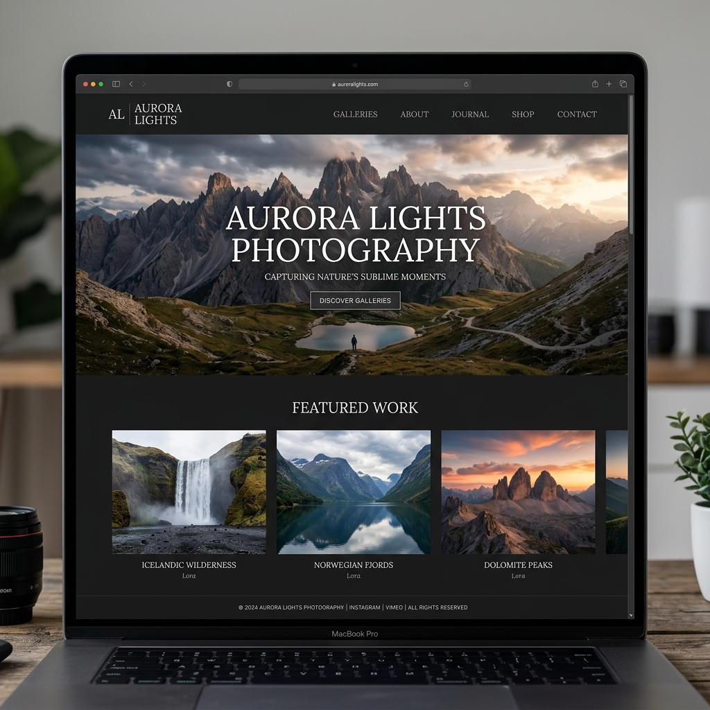

ត្រឡប់ក្រោយ
Photography Portfolio

អំពីគម្រោង (Overview)
ការរចនាគេហទំព័រនេះត្រូវបានបង្កើតឡើងជាពិសេសសម្រាប់អ្នកថតរូបអាជីព ដើម្បីតាំងបង្ហាញរូបភាព និងសេវាកម្មរបស់ពួកគេ។ ការរចនាផ្តោតសំខាន់ទៅលើភាពសាមញ្ញ (Minimalist) ដើម្បីឱ្យរូបថតនីមួយៗមើលទៅលេចធ្លោ និងទាក់ទាញ។
លក្ខណៈពិសេសនៃការរចនា (Design Highlights)
- ផ្ទៃខាងក្រោយពណ៌ងងឹត ដើម្បីរំលេចពណ៌នៃរូបថត
- របៀបបង្ហាញរូបភាពបែប Gallery (Masonry Layout)
- ទម្រង់ទំនាក់ទំនងសាមញ្ញ និងងាយយល់
- Animation អណ្តែតឡើងទន់ភ្លន់ពេលអូសចុះក្រោម